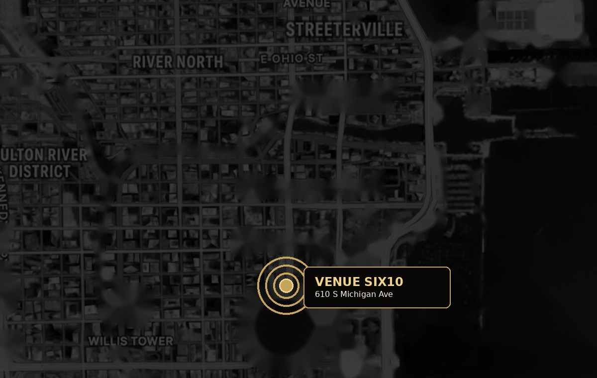

1
The Blackstone, Autograph Collection
Nearest hotel to Venue SIX10 • approx. 2–3 minute walk.
2
Hilton Chicago
Close to Grant Park and the venue • approx. 4–5 minute walk.
3
Le Méridien Essex Chicago
Boutique hotel south of the venue • approx. 5–6 minute walk.
4
Palmer House Hilton
Historic Loop hotel • approx. 10–15 minute walk or short rideshare.
5
Chicago Athletic Association
Michigan Avenue hotel overlooking Millennium Park • approx. 12–15 minute walk.
6
The Langham Chicago
Luxury River North option • short rideshare from Venue SIX10.

Map is included for orientation. Guests should confirm walking routes and transit timing with Apple Maps, Google Maps, or their preferred navigation app.
Preferred Booking Rates
Attendee Booking Links
Preferred-rate links are available for select partner hotels. Availability and pricing are managed directly by each hotel.